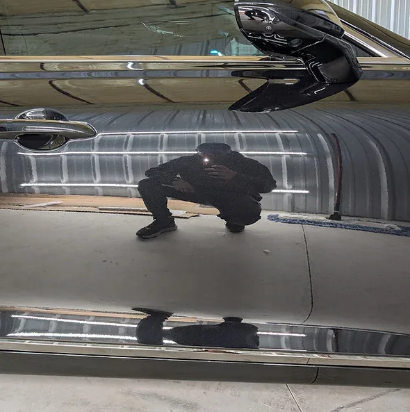
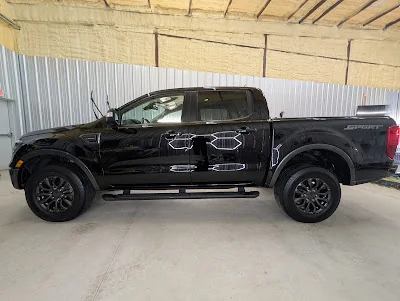
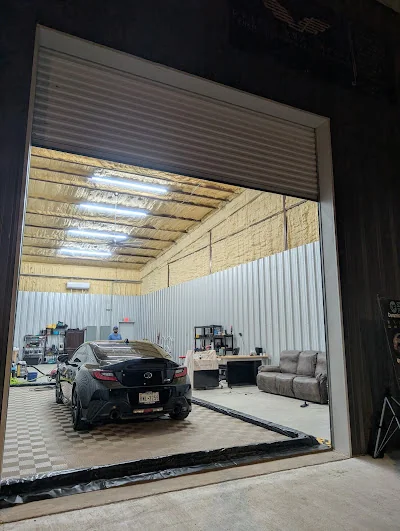
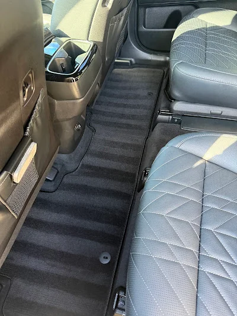
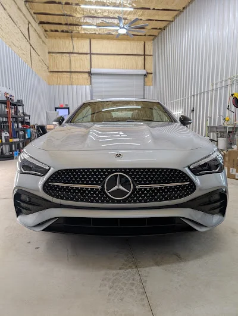
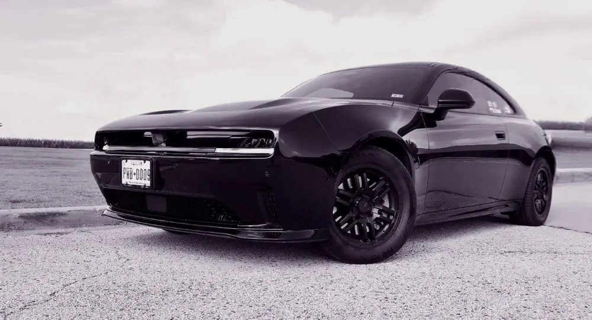

Help keep heat out
Ceramic film targets solar heat through the glass, helping take the edge off those hot Texas drives.
Less heat, less glare and a cleaner look. Professional ceramic window tint, installed right here in Taylor.
From your morning commute to a sunny afternoon on US-79, ceramic tint helps make time behind the wheel more comfortable. Choose performance, privacy and a finish that suits your vehicle.
Ceramic film targets solar heat through the glass, helping take the edge off those hot Texas drives.
Soften bright sunlight for a more comfortable view of the road. The team can help you choose your shade.
UV-rejecting film helps reduce the exposure that contributes to fading in seats, dashboards and trim.
A clean, even shade gives your car a finished look, with options to balance privacy and visibility.
Film performance varies by product, shade and vehicle glass. Confirm the film specifications included in your $299 package with Detail Now.

Good tint starts with people who care about the finish. At Detail Now, we help you choose the right coverage and shade, prepare the glass and install your film with care. One local studio for window tint, ceramic coatings and paint protection.
A clear offer. A local team. A finish you'll enjoy every time you walk up to your car. Here's what to know before you book.
Start with your vehicle details. Detail Now will confirm eligibility, included windows and the final package before you book.
Get more than darker glass. Ceramic film helps reduce heat and UV exposure without the metal found in older metallic films.
Visit us at 190 Ninety Four Ln, Suite 112. We're a local choice for Taylor, Hutto and drivers across the Austin metro.
Clean glass, precise fitting and attention to the edges. The little details make the result feel right.
Know what stands behind your installation. Our team will walk you through the film warranty, coverage and written terms for your package.
Talk through shade, coverage and aftercare with the team. Leave knowing how to look after your newly tinted glass.
*Warranty coverage and exclusions depend on the installed film and package. Confirm glass coverage, old-film removal and taxes before booking.
A closer look at the vehicles and studio featured in Detail Now's official window tint gallery.




Customer experiences at the Taylor studio.

“By the time they were done, Michael and his team had my Charger looking like a show car!”Visit Detail Now on Google ↗
“Michael was prompt, meticulous, professional and takes real pride in the quality of his work.”Visit Detail Now on Google ↗
“Michael did a fantastic job on my car!”Visit Detail Now on Google ↗
Tell us what you drive. We'll help with the rest.
Vehicle eligibility, included windows, film, warranty, removal and taxes confirmed by the shop before booking.
Prefer a conversation? (737) 399-2779 ↗Our ceramic window tint promotion is $299. Tell us your vehicle's year, make and model so the team can confirm eligibility, the included windows, installed film and any removal costs or taxes before you book.
Ceramic tint helps reduce solar heat, glare and UV exposure while adding privacy. It offers a comfort upgrade beyond simply darkening the glass. Performance depends on the chosen film and shade.
Detail Now lists 2–4 hours for most passenger vehicles, with larger vehicles sometimes taking longer. Selected coverage and old-film removal can affect timing. The team will confirm your appointment details.
Tell us your priorities: comfort, privacy, glare reduction or visibility. The team can explain suitable shade options and check the requirements for your vehicle's glass.
Our installation process is designed for immediate roll-down. At pickup, the team will confirm the instructions for your installed film, along with cleaning and aftercare advice.
Our ceramic film installations come with manufacturer warranty coverage and our installation guarantee. The team will confirm the written warranty and exclusions that apply to your $299 package.
Visit us at 190 Ninety Four Ln, Suite 112, Taylor, TX 76574, serving the Austin metro. Get directions ↗ or call (737) 399-2779.